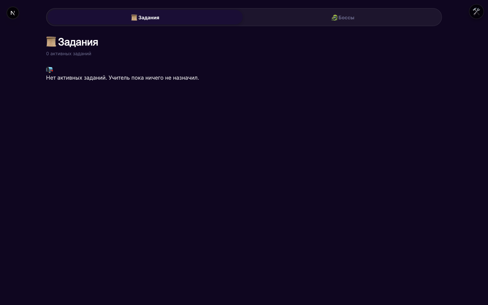
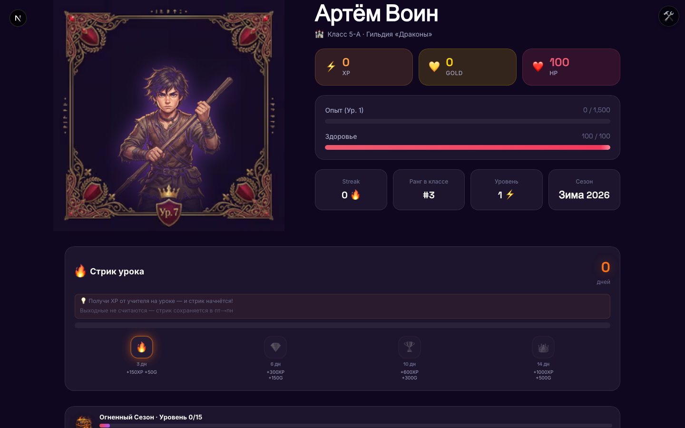
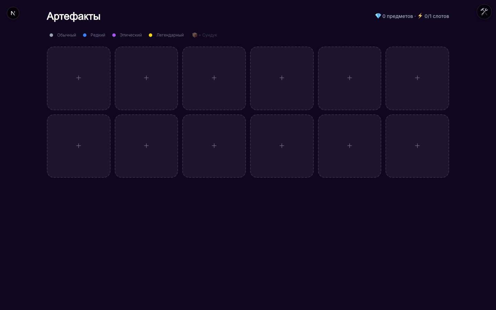
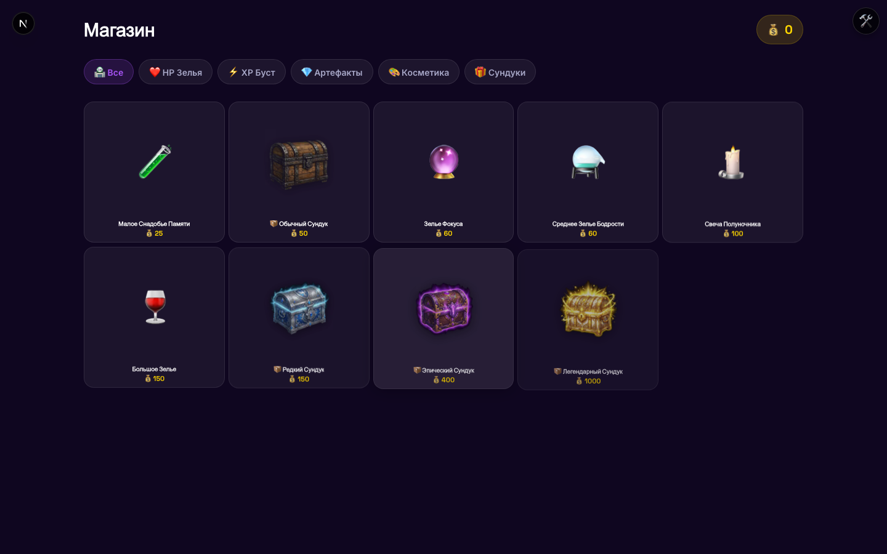
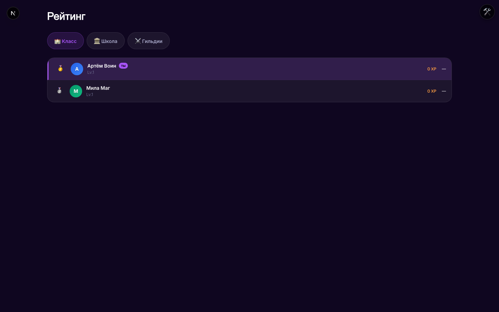
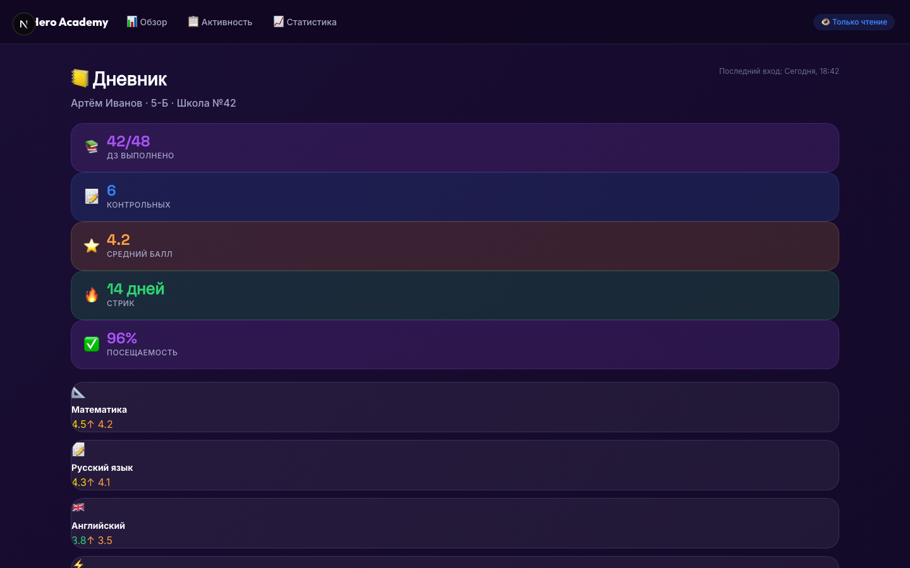

Почему я это затеял
[Фото: Дмитрий в детстве с геймпадом ИЛИ стилизованная иллюстрация «геймер-родитель»]
- «Я вырос с играми. Знаю их язык изнутри.»
- «Видел, как дети сидят 3 часа за героем в игре — и не могут 15 минут за домашкой.»
- «Понял: проблема не в детях и не в школе. Проблема — в языке.»
Дети уже умеют долго и усердно. Только не в школе.
- 74% школьников 10-13 лет: «уроки скучно» (ВЦИОМ, 2024)
- 4+ часа/день — в Roblox, TikTok, YouTube
- Те же дети 3 часа подряд качают героя в игре
Мы не заменяем школу. Мы переводим её на язык игры.
| Школа | Академия Героев |
|---|---|
| Домашняя работа | Квест |
| Самостоятельная | Данжен |
| Контрольная | Битва с Боссом |
| Ошибка в задании | Урон герою |
| Правильный ответ | Опыт (XP) и золото |
Каждый ребёнок — герой
- Уровень и XP — виден прогресс
- HP — падает с ошибками, восстанавливается успехами
- Золото и артефакты — награды за квесты
2 минуты утром. Обычная школа. 2 минуты вечером.
🌅
Утро (2 мин)
посмотреть героя, надеть артефакты на день
📚
Весь день
обычные уроки, домашка, контрольная
🌆
Вечер (2 мин)
увидеть результат — XP, золото, новые артефакты
Это не игра, в которую играют. Это стимул на языке ребёнка.
- Ребёнок не играет внутри приложения — он живёт обычной школой
- Оценки, активность, контрольные автоматически превращаются в XP и золото
- Приложение — отражение его дня, а не замена дня
Опыт — это реальные знания

- XP начисляется только за работы, проверенные учителем
- Чем сложнее тема — тем больше XP
- Без учёбы не прокачаться — игра не работает в вакууме
Ошибка — не катастрофа. Это часть пути.

- HP падает за ошибки — чтобы результат был ощутим, а не абстрактен
- Любой ребёнок может восстановиться: зелья, артефакты, новый день, новый сезон
- MAX HP = 100 у всех. Нет «сильных» и «слабых» героев
Артефакты — то, ради чего возвращаются

- 4 редкости: обычные → легендарные
- Пассивные эффекты: +% опыт, защита, бонус золота, защита стрика
- Выпадают за стрики, достижения, победу над боссом
Новая социальная роль — «герой класса»
 🏠 Тепло Очага
🏠 Тепло Очага+20 HP всем
 💥 Огненный Бум
💥 Огненный Бум+100 XP всем
 💰 Драконий Клад
💰 Драконий Клад+50 Gold всем
 🔥 Спичка Дружбы
🔥 Спичка Дружбыредкий бафф
- Часть артефактов действует на весь класс: +20 HP всем, +100 XP всем, +50 Gold всем
- Выпадают редко — за стрики, достижения, победу над боссом
- Использует один ребёнок, но эффект получает весь класс
Никаких настоящих денег в игре у ребёнка. Сейчас и в пилоте.

- Магазин работает только на внутриигровое золото
- Золото зарабатывается только реальной учёбой
- Ни один игровой баланс не ускоряется деньгами
- В пилоте и весь первый год — всё бесплатно
Лидерборд, где никто не запирает 1 место

- Сезон = четверть → каждый сезон начинается с нуля
- Стрики и артефакты делают догонку реальной
- По симуляциям: лидер меняется ≥3 раз за сезон (подтверждённый KPI)
Контрольная = битва всего класса против общего босса
[Скриншот битвы с боссом — будет добавлен вручную]
- Правильная задача = урон боссу
- Ошибка = урон герою (своему, не общему)
- Победа — общеклассная; награда на всех
Для вас — вся картина в одном экране

- Задания, оценки, активность — в реальном времени
- Разрез по предметам: где ребёнок силён, где проседает
- Четверть целиком на одном графике — виден тренд
- Read-only: вы видите, но не вмешиваетесь в игру
Данные ребёнка — не товар. Ни сейчас, ни потом.
- Хранение: Supabase (сервера в ЕС)
- Доступ: только учитель, родитель и админ школы
- Никаких рекламных интеграций, никаких трекеров
- Удаление по первому запросу — сразу после пилота или раньше
Мы запускаем Академию Героев впервые. И мы выбрали вас.
- Это пилот — первый запуск в живой школе
- 14 учебных дней в мае, один класс, один предмет (математика)
- Намеренно маленький масштаб — чтобы быть на связи с каждой семьёй лично
- Возможны шероховатости — реагируем в течение часов, не дней
Мы не гадаем на живых детях. Мы симулируем до запуска.
| KPI | Отличник | Стабильный | Минималист | Кит |
|---|---|---|---|---|
| 75%+ доходят до финала | ✅ | ✅ | ✅ | ✅ |
| Лидер меняется 3+ раз | ✅ | ✅ | ✅ | ✅ |
| 50%+ золота тратится | ✅ | ✅ | ✅ | ✅ |
| 80%+ артефактов использовано | ✅ | ✅ | ✅ | ✅ |
- 4 архетипа учеников: Отличник (топ 10%), Стабильный (50%), Минималист (делает только минимум), Кит (скупщик артефактов)
- Каждая правка баланса прогоняется через тысячи сценариев
- 4 метрики здоровья: 75%+ доходят до конца четверти / лидер меняется 3+ раз / 50%+ золота тратится / 80%+ артефактов используются
- Запускаем на живой школе только когда все 4 зелёные
Я создаю это в первую очередь для своих детей.
[Фото: семья Дмитрия — закинет пользователь в конце]
Я вижу каждое утро, как моим детям тяжело взяться за школу.
И тот же вечер — как они часами готовы качать персонажа.
Я делаю эту систему для них. Чтобы школа стала тем, что хочется открывать утром.
И я очень хочу, чтобы она была доступна не только им — а всем детям, которым сейчас скучно.
«Ваш класс — первый, кому я это доверяю. Спасибо.»
Подтвердите согласие — это 2 минуты
- Отсканируйте QR → форма Google (3 вопроса)
- Подпишите согласие до 1 мая (чтобы ребёнок вошёл в игру 4 мая)
- Передумали в процессе — отзываете одним сообщением, без бюрократии
Ваши вопросы
- 💬 Напишите в чат Zoom
- 🎤 Или включите микрофон
- 📧 Что не успеем — пришлю в родительский чат сегодня вечером
Спасибо, что доверяете.
[Фото: семья Дмитрия]
Telegram: [placeholder]
Почта: [placeholder]
Старт 4 мая · Финал 25 мая · Общий разбор — конец мая